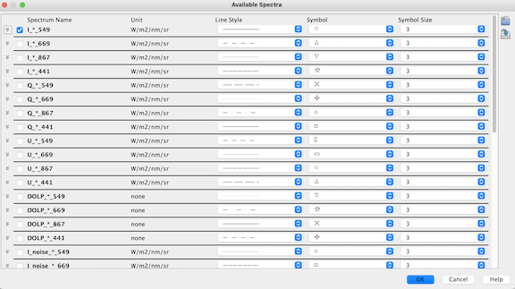

| The Angular Band Chooser | |
The angular band chooser is accessed by clicking  in the
Angular View.
You can use the angular band chooser to set which angular bands to display in the angular view.
and to alter their appearance.
in the
Angular View.
You can use the angular band chooser to set which angular bands to display in the angular view.
and to alter their appearance.
See below for a screenshot.

Spectra are defined as band groups.
You can add or change groups using the product's Property Editor.
Bands which are not included in a group will be displayed as "Other" or "Angular bands".
You can select or deselect an angular band by checking the box next to its name.
Clicking  will bring up a sub-table which allows you to select
and deselect distinct bands.
will bring up a sub-table which allows you to select
and deselect distinct bands.
Tip: When you have made a sub-selection of bands within angular bands and then checked the respective angular band box, checking it again will bring back your selection.
In addition, you can choose a line style, a symbol, and the symbol size for each angular band. You can also choose to use no symbol.
The Angular Band Chooser provides the following tool buttons:
| Imports band configurations from a file. | |
| Exports band configurations to a file. |